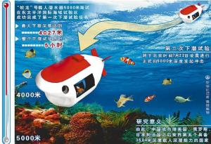

历史沿革
海试工作
3000米级海试
2009年8月开始，“蛟龙号”载人深潜器先后组织开展1000米级和3000米级海试工作。2010年5月31日-7月18日，“蛟龙号”载人潜水器在中国南海3000米级海上试验中取得巨大成功，共完成17次下潜，其中7次穿越2000米深度，4次突破3000米，最大下潜深度达到3759米，超过全球海洋平均深度3682米，并创造水下和海底作业9小时零3分的记录，验证了“蛟龙号”载人潜水器在3000米级水深的各项性能和功能指标。
5000米级海试
5000米级海试是国家高技术研究发展计划（863计划）海洋技术领域的重点任务，由科技部委托、国家海洋局组织、中国大洋协会具体实施，旨在检验和考核“蛟龙号”载人潜水器3000米级海试后技术改进的效果，以及其在5000米级深度的安全性能和作业能力，为开展更大深度海试和未来实际应用奠定基础。
共有来自13家单位的96名科研人员参加了海试任务。海试期间，全体队员在位于东太平洋的E1、E2、E3三个试验海区共完成5次下潜作业，共有8人完成15人次下潜，下潜深度分别为4027、5057、5188、5184和5180米。潜水器在海底完成多次坐底试验，并在中国大洋协会多金属结核勘探合同区开展海底照相、摄像、海底地形地貌测量、海洋环境参数测量、海底定点取样等作业试验与应用，完成了各项实验任务。
搭载着“蛟龙”号的“向阳红09”船已从第三备选区抵达300多海里外的东北太平洋多金属结核勘探合同区，按照计划将于28日凌晨择机下海，具体时间需由现场指挥部根据当时天气、船体状况确定。
该合同区为“蛟龙”号冲击5000米深度的首选海域。7月16日抵达东北太平洋多金属结核勘探合同区后，海试指挥部原定17日下午进行首次试验，但由于试验海区风浪较大，无法满足作业要求。海试现场总指挥经请示“蛟龙”号海试领导小组，决定向南前进，最后选择海况相对好的第三备选区。
第一次试潜
2011年7月21日凌晨3点，中国载人深潜进行5000米海试，“蛟龙号”成功下潜。经过5个多小时的水下作业，2011年7月21日8点，“蛟龙号”首次深潜圆满成功。此次乘坐“蛟龙号”潜水器下潜的三名试航员是崔维成、叶聪和杨波。
第二次试潜
2011年7月26日3点38分，第二次下潜试验任务正式开始。参加下潜任务的潜航员为叶聪、杨波、付文韬。
2011年7月26日4点46分，下潜深度达到2000米；
2011年7月26日5点40分，达到4072米；

2011年7月26日6点07分，成功突破5000米级水深大关；
22011年7月26日6点17分，下潜至5057米水深；
22011年7月26日6点48分，潜器抛弃压载铁后开始上浮；
22011年7月26日9点30分，浮出水面，在第二次下潜试验中成功突破5000米水深大关；
22011年7月26日10点，回收至向阳红09船，整个过程各项仪器指标及通讯正常。
2此次下潜试验完成了既定目标，最大下潜深度达到5057米，创造了中国载人深潜新的历史。
2整个过程历时近6个小时，潜航员在5000米水深时对潜器水下各项功能进行了验证，多次进行坐底试验，同时拍摄到海底生物照片。此次下潜成功，为后续第三次下潜——开展海底观测和取样等水下作业奠定了良好基础。
第三次试潜

2011年7月28日历经9小时14分，中国7000米蛟龙号载人潜水器顺利完成5000米级海上试验第三次下水任务，此次最大下潜深度5188米，再次创造中国载人深潜新纪录，并进行了坐底、海底照相、声学测量、取样等多项科学考察任务，也创造了蛟龙号水中作业最长时间纪录。此次下水，蛟龙号验证了大深度环境下的技术功能和性能指标，圆满完成了科考和科学试验任务。
第四次试潜

2012年6月24日，“蛟龙号”载人潜水器7000米海试在西太平洋马里亚纳海沟进行了第四次下潜试验。
2012年6月24日5点29分，潜水器开始注水下潜；
2012年6月24日6点44分，“蛟龙号”下潜深度超过3000米；
2012年6月24日7点40分，“蛟龙号”下潜深度超过5100米；
2012年6月24日8点54分，下潜深度7005米；
2012年6月24日9点15分，潜水器已经坐底，最大下潜深度7020米。
第五次试潜
2012年6月27日5时29分开始的7000米级海试第5次下潜中，蛟龙号再次刷新同类型潜水器下潜深度纪录；
2012年6月27日11时47分左右，蛟龙号下潜深度达7062.68米；
2012年6月27日12时左右，抛载开始上浮；
2012年6月27日15时30分左右返回水面。
第六次试潜
此次试潜由叶聪、崔维成和张东升担任试航员，刘峰担任海试现场总指挥。本次下潜试验主要任务是在对前五次下潜试验的结果进行综合分析的基础上“查缺补漏”地进行检验，安排相应试验内容。
2012年6月30日5时23分，“蛟龙号”载人潜水器被布防入水，开始进行7000米级海试第六次也是全部海试中的最后一次下潜试验。
2012年6月30日9时56分，“蛟龙号”到达最大深度7035米，并坐底。随后，“蛟龙号”在完成海底两个小时的作业后开始上浮。
2012年6月30日14时33分，“蛟龙号”浮出水面，完成了中国“蛟龙号”7000米级海试的全部试验。
试潜凯旋
2012年7月16日上午，随着“向阳红09”船顺利返抵青岛，为期44天的蛟龙号载人潜水器7000米级海试任务圆满完成，同时也标志着在国家高技术研究发展计划（863计划）的持续支持下，蛟龙号历时10年的研制和海试工作圆满结束。
通过验收
蛟龙号载人潜水器研制与海试于2013年4月27日在江苏无锡通过科技部组织的专家验收。
验收专家组认为：蛟龙号载人潜水器不仅具有国际上同类型潜水器的最大下潜深度，而且在其最大设计深度安全可靠，并拥有投入应用所需要的实际作业能力，在声学通讯、自动控制以及大深度作业等性能方面拥有明显的领先优势;蛟龙号载人潜水器研制及海试项目已经全部完成了科技部批复的各项任务，全面达到了合同规定的考核目标和技术指标。验收专家组一致同意蛟龙号研制及海试项目通过验收。
蛟龙号载人潜水器研制和海试成功，标志着中国系统地掌握了大深度载人潜水器设计、建造和试验技术，实现了从跟踪模仿向自主集成、自主创新的转变，跻身世界载人深潜先进国家行列。蛟龙号通过验收后，即正式由科技部863计划海洋技术领域移交其用户中国大洋矿产资源勘探开发协会，在未来深海矿产资源勘探和深海科学研究中发挥开拓者的作用。
蛟龙号载人潜水器研制与海试是国家高技术研究发展(863)计划先进制造技术领域和海洋技术领域立项支持的国家重大科研任务，历时10年，863专项经费累计投入3.5亿元。该任务由中国大洋矿产资源勘探开发协会办公室牵头，会同中国船舶重工集团公司、中国科学院、国土资源部、国家海洋局、教育部等系统共100余家科研院所和企业完成。
验收专家组由来自清华大学、上海交通大学、中国造船工程学会、中国海洋石油总公司等单位的15位专家组成，徐冠华院士担任专家组组长。